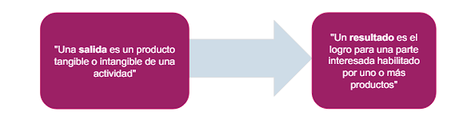
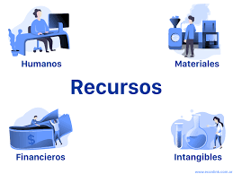

ITIL 4 proporciona un modelo operativo digital de extremo a extremo en la organización para la entrega y operación de productos y servicios habilitados por TI y permite que los equipos de TI continúen desempeñando un papel importante en la estrategia comercial del negocio. ITIL 4 también proporciona un enfoque integral de extremo a extremo que integra marcos como Lean, Agile y DevOp
El componente central de la gestión de servicios es el servicio. El proveedor de servicios entrega valor a través del servicio. Los servicios que proporciona una organización se basan en productos. Los productos son la configuración de los recursos de una organización diseñados para ofrecer valor a un consumidor.
Los servicios que proporciona una organización se basan en uno o más de sus productos. Las organizaciones poseen o tienen acceso a múltiples recursos, como personas, información y tecnología, flujos de valor y procesos, proveedores y socios. Los productos son configuraciones de estos recursos, creados por la organización, que potencialmente ofrecerán valor para sus clientes
Cada producto que ofrece una organización se crea teniendo en cuenta
los requisitos de la cantidad de grupos de consumidores objetivo.
Un producto no es exclusivo de un grupo de consumidores y puede
utilizarse para abordar los requisitos de numerosos grupos diferentes.
Los productos están diseñados para atraer a los diferentes
grupos de consumidores y para satisfacer sus requisitos.
Los productos suelen ser complejos y no son completamente
visibles para el consumidor. La parte del producto que es realmente
visible para el consumidor no siempre representa los componentes
completos que forman parte del producto y que respaldan su entrega
Es un medio para habilitar la creación conjunta de valor al facilitar los resultados que los clientes desean alcanzar, sin que el cliente tenga que administrar los costos y riesgos específicos
Más informaciónEs una configuración de los recursos de una organización designados para ofrecer valor a un consumidor. la oferta es la descripción de uno o más servicios, diseñado para satisfacer las necesidades de un específico grupo de consumidores.
Más informaciónUn servicio es un medio para habilitar la co-creación de valor al facilitar los resultados que los clientes desean lograr sin que el cliente tenga que gestionar los costos y riesgos específicos
Lograr los resultados deseados requiere recursos (y por lo tanto costos) y, a menudo, están relacionados con los riesgos. Además, las relaciones de servicios pueden introducir nuevos riesgos y costos, o pueden afectar negativamente algunos de los resultados establecidos, al mismo tiempo que respaldan a otros. Las relaciones de servicios se perciben como valiosas sólo cuando tienen más efectos positivos que negativos
Al igual que las otras tres dimensiones, la dimensión de los Flujos de Valor y Procesos es aplicable tanto al SVS en general como a productos y servicios específicos. En ambos contextos, define las actividades, flujos de trabajo, controles y procedimientos necesarios para alcanzar los objetivos definidos
La dimensión Flujos de Valor y Procesos se centra en la
integración y coordinación tanto del SVS en general como de
los productos y servicios específicos. Define las actividades,
flujos de trabajo, controles y procedimientos necesarios para
lograr los objetivos acordados
En otras palabras, la dimensión se centra en la organización
eficiente de las diversas actividades para entregar valor a las
partes interesadas. Por lo tanto, existe la necesidad de un
modelo operativo que organice eficientemente las actividades
clave para administrar productos y servicios
| El propósito de la práctica mejora continua es alinear las prácticas y los servicios de la organización con las necesidades comerciales cambiantes a través de la identificación y mejora continua de los servicios, componentes del servicio, prácticas o cualquier elemento involucrado en la gestión eficiente y efectiva de los productos y servicios |
| El control de cambios se centra en los cambios de productos y servicios |
| Se comprenden las necesidades de las partes interesadas y se
priorizan los productos y servicios. |
| Se establecen y mantienen prioridades para productos / servicios nuevos o modificados para los clientes |
|  |
| Asegurarse de que el proveedor y su desempeño se gestionen de manera adecuada para respaldar el aprovisionamiento de productos y servicios de calidad. |
| Los servicios que proporciona una organización se basan en uno o más de sus productos. Las organizaciones poseen o tienen acceso a múltiples recursos, como personas, información y tecnología, flujos de valor y procesos, proveedores y socios. |